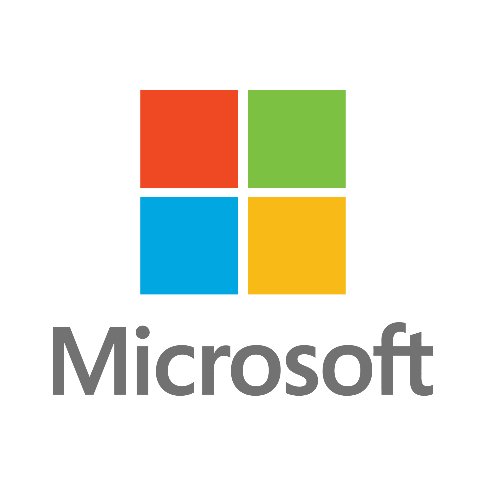

Computer Brands
The best computer brands have been trusted by top reviewers for decades.
Brands like Apple have a long history of fast and secure computers. Dell is known for its high-quality, customizable desktops and laptops. Other brands, like Microsoft, are renowned for boosting productivity with built-in software like Excel and Word and its Surface laptops and tablets. Razer increasingly has options not just for gamers but for productivity as well.

|
Dell
Dell is one of the top computer brands today because of the company's broad selection of high-quality machines. No matter your goals, it most likely has a product just for you — plus, if you buy your PC directly from Dell, you can customize it exactly how you like it. In general, Dell machines can be a bit pricier than others you can find, but you can feel good about getting a solid, dependable computer that’s just right for your needs. |
|---|---|
|
HP
Jostling with Lenovo for the biggest PC market share in the world, HP is a brand that's hard to miss. The company makes laptop and desktop models of all types, all with reasonable pricing for most budgets. Its Pavilion computers are popular with everyday consumers looking for dependability and value, with the Envy line representing a slight step up in quality and price. There's also everything from entry-level Chromebooks and Stream laptops to the Omen line of gaming products to the powerful and durable workstation-class ZBook laptops for professionals. |

|

|
Apple
For many, Apple is more than a brand: It’s a way of life. Even looking past the iPhones, iPads, and Apple Watches that we’ve gotten used to seeing everywhere we turn, the Cupertino tech giant continues to produce desktops and laptops with the same trendsetting designs, gorgeous displays, and ease of use we’ve come to expect. |
|
Lenovo
As one of the largest computer manufacturers at the time of writing, it makes sense that Lenovo boasts perhaps the most extensive selection of products. It covers the whole spectrum of price ranges, from entry-level to premium, for everything from homes to offices. Business-oriented PCs are some of Lenovo's most popular offerings, including its ThinkCentre desktops and ThinkPad notebooks, with a newer, sleeker ThinkBook line for small businesses. Most ThinkPad models are affordable, understated in design, and built for effective, secure office use. |

|
|  |
Microsoft
Microsoft might make its broadest impact through Windows, which is still the operating system found on the majority of computers around the world. But the company has also become a vital player in the laptop market with its line of Surface devices. Though the selection is pretty limited and their prices are higher, Surface products have shown themselves to be attractive for their blend of high-performance components and portability. |
|
Asus
Browse Asus’s collection of PCs, and you’ll find a solid mix of quality, innovation, and value. It boasts plenty of performance, even for its entry-level Chromebooks. |

|

|
Acer
Founded a few years earlier than fellow Taiwanese manufacturer Asus, Acer brings a vast selection of products at all price levels, from high-end to budget-oriented PCs. But Acer has the edge in the sheer number of options, with laptop lines that include the affordable Aspire, the convertible Spin, the detachable Switch, the impossibly slim Swift, and Chromebooks galore. Acer’s desktops include a vast range of towers and all-in-one PCs. |
|
Razer
Razer is best known for its gaming laptops and accessories, but the company has increasingly branched out and now sells a wide range of devices, including ultrabooks. The Razer Blade series featuring top-of-the-line specs, is the most well-known laptop for gamers. |